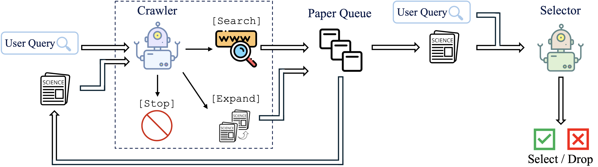
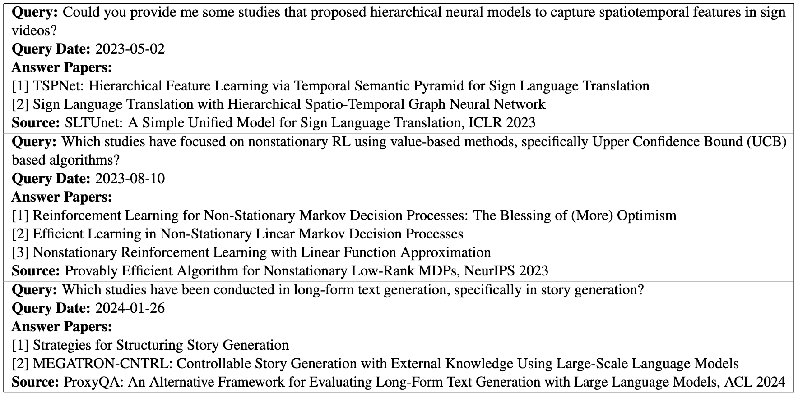
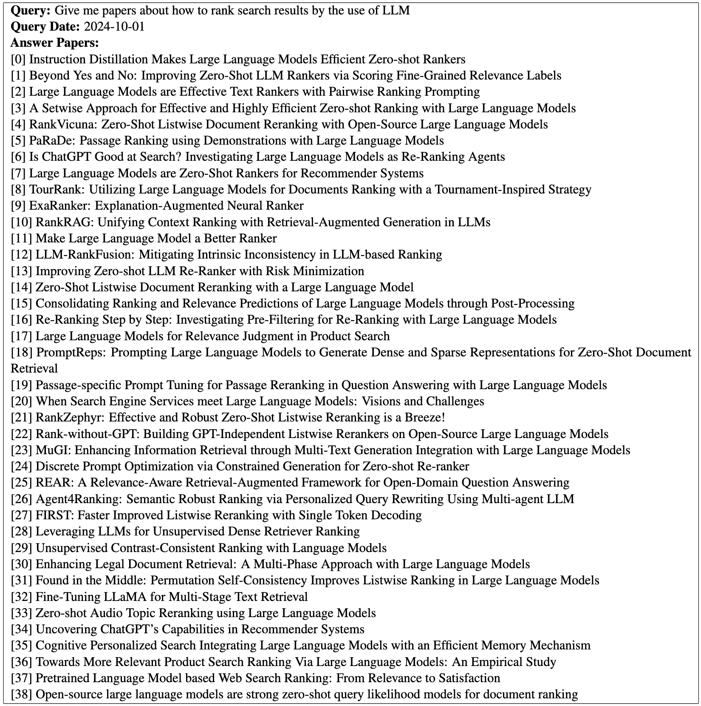
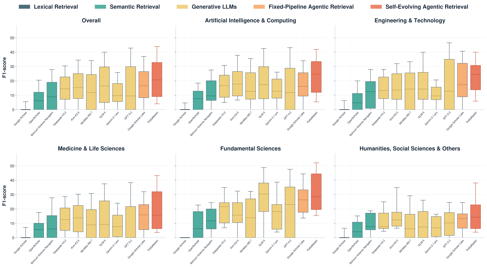
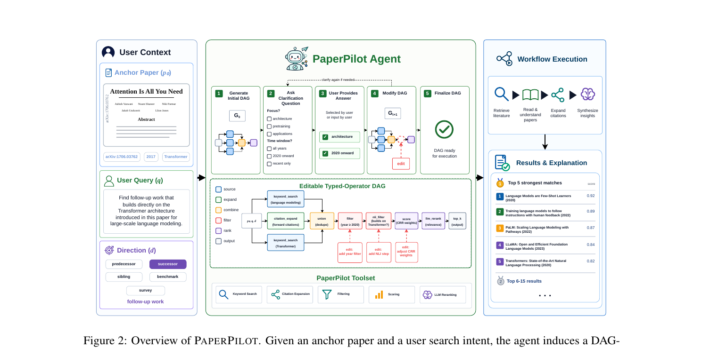
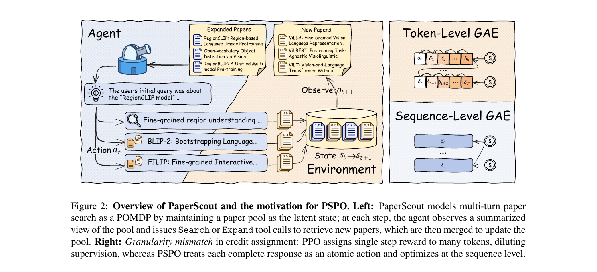
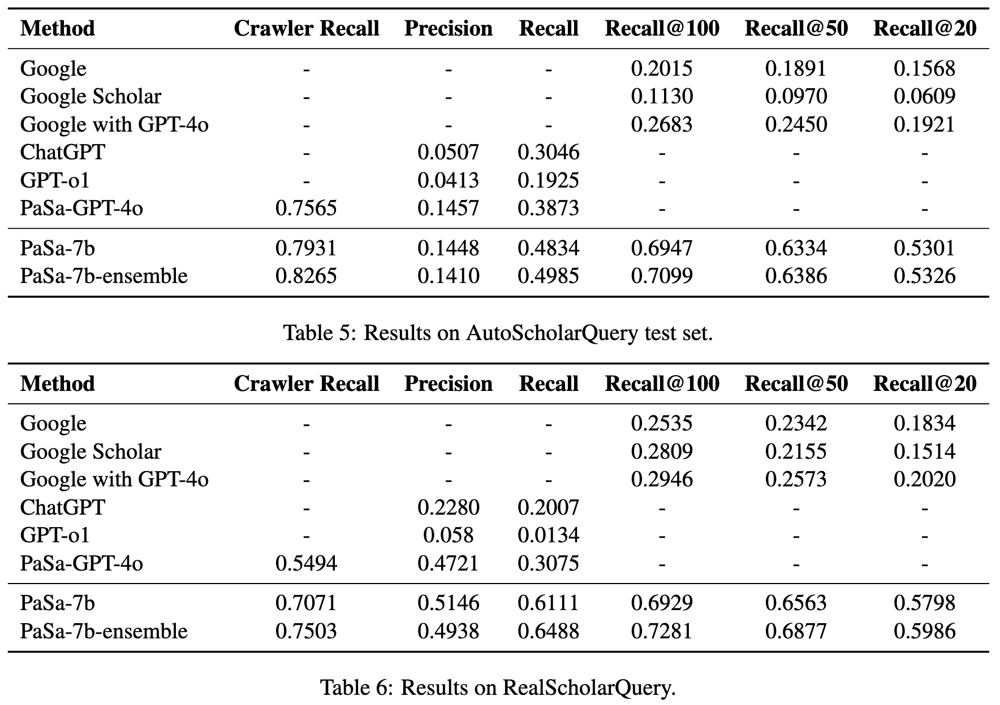
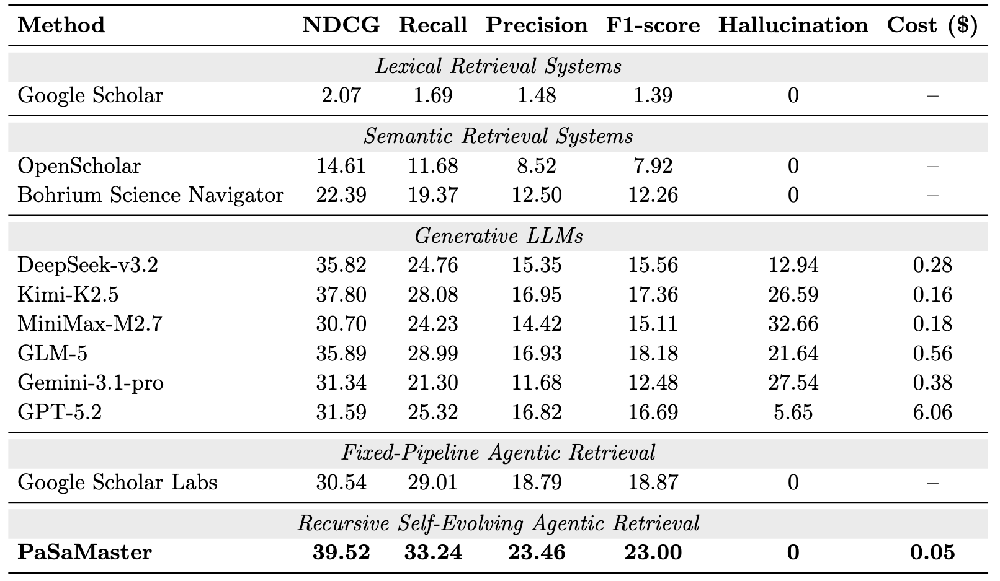
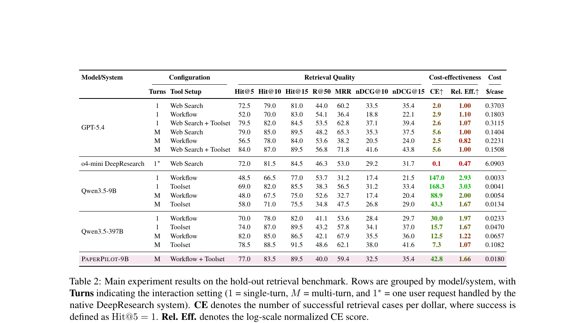
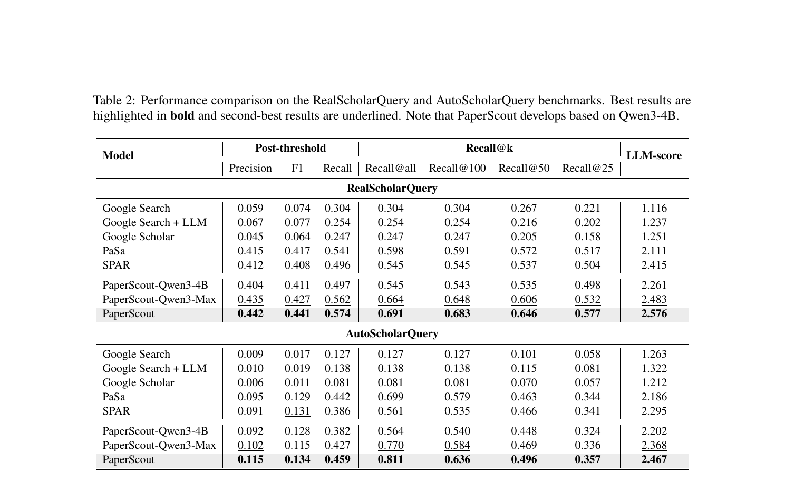

研究者怎样少漏论文？
普通关键词搜索难以理解细粒度条件，也不会主动沿引用网络继续探索。
PaSa · PaSaMaster · PaperPilot · PaperScout：它们都在“找论文”，但输入、目标集合、交互方式和评测协议并不相同。
30 秒结论：PaSa 学习一个“搜索—沿引用扩展—筛选”的双 Agent 流程；PaperScout 把同类任务改造成可自适应决策的 POMDP，并用 PSPO 训练；PaperPilot 从锚点论文出发，把用户澄清落实成可编辑 DAG；PaSaMaster 面向跨学科多约束查询，用检索证据递归更新意图，并只对真实论文排序。四者不是一个排行榜上的四行。
最容易产生误判的地方，是把所有自然语言论文搜索都视为同一个任务。实际上，这四项工作覆盖从“开放式高召回”到“锚点关系检索”和“多约束验证”的不同问题。
普通关键词搜索难以理解细粒度条件，也不会主动沿引用网络继续探索。
输入复杂学术 Query，输出尽可能完整且准确的相关论文集合。这才是 PaSa 处理的任务。
最简洁的表述：PaSa 研究的是 Comprehensive Academic Paper Search 任务；AutoScholarQuery 和 RealScholarQuery 是承载该任务的训练/评测数据，不是两个独立任务。
任务：广泛 Search 与引用扩展，先提高候选池召回率，再由 Selector 保精度。
仍是开放式 Query，但由 Agent 根据论文池动态选择 Search 或 Expand。
给定 Anchor Paper，经过多轮澄清寻找前作、后续、同类、Benchmark 或 Survey。
同时理解主题、方法、应用、年份、期刊和排除条件，返回可验证的 Top-K。
这个箭头不是严格的时间演进，也不是优劣排名。它表示任务结构逐渐增加：PaperScout 与 PaSa 最接近；PaperPilot 改变了输入形式；PaSaMaster 则强调跨学科、多约束和来源真实性。
统一问四件事：要找什么、流程怎么走、检索时什么会改变、模型参数是否训练。这里的“检索时自适应”与“训练时更新参数”是两回事。
| 维度 | PaSa | PaperScout | PaperPilot | PaSaMaster |
|---|---|---|---|---|
| 任务怎么定义 | 复杂 Query → 尽可能完整、准确的相关论文集合 | 复杂 Query → 在有限调用下，经过多轮决策发现更多相关论文 | Anchor Paper + 演化中的用户意图 → 关系明确的排序论文列表 | 多约束 Query → 满足 Checklist、来源可验证的 Top-K |
| 输入 → 输出 | 细粒度 Query → 筛选后的论文集合 | Query + 论文池的部分观察 → 多轮积累的论文集合 | Anchor + Query + Direction + 反馈 → Top-50、证据/关系图与 DAG | 自然语言约束 → Top-K、逐条件判断、证据与分数 |
| 方法流程 | Query → Crawler Search/Expand/Stop → 候选队列 → Selector 筛选 | 观察 Paper Pool → 动态选 Search/Expand → 评分、去重、入池 → 循环 | 生成 Typed DAG → 向用户澄清 → 编辑 DAG → 执行与缓存 → 排序/证据 | Navigator 产出 Strategy + Checklist → Librarian 召回、验真、评分、重排 → 反思后进入下一轮 |
| 检索时谁在变 | Crawler 会选不同动作；Crawler/Selector 分工固定，没有用户反馈回路 | 检索状态不同，下一步 Search/Expand 及其参数就不同 | 用户反馈直接改变 DAG 的节点、连边或参数 | 已排序证据反过来修改 Strategy 与 Checklist；模型权重不在线更新 |
| 是否训练，训练什么 | Selector SFT；Crawler Imitation + Session-level PPO | 训练策略。Qwen3-4B 用 PSPO 做交互序列级 Actor-Critic；相关性奖励来自 PaSa Selector | 训练工作流生成。5,540 条 Workflow SFT + 1,733 个困难偏好对的 IPO-style DPO | 训练轻量 Scorer/Ranker。多学科 Teacher 蒸馏；递归反思本身是推理时流程，不是系统级 RL |
| 方法本质 | 分工：谁负责找，谁负责筛 | 策略：下一步该 Search 还是 Expand | 表示与控制：把意图变成可编辑工作流 | 认知迭代与验真：用证据修正意图，只排序真实来源 |
点击卡片展开。每个方法都按相同问题阅读：它处理什么任务、怎样运行、怎样训练、用什么 Benchmark/Baseline，以及结果能支持什么结论。
任务 ≠ Benchmark：PaSa 的任务是“给定复杂 Query，找出尽可能完整、准确的相关论文集合”。AutoScholarQuery 是合成训练/评测集，RealScholarQuery 是只用于测试真实泛化的评测集。

site:arxiv.org 与日期限制召回论文。一次 Query 可能产生数百乃至上千篇候选，完整轨迹采样过长。论文把轨迹按 Stop 切成 Session，在 Session 内估计 Return，同时把后续新论文 Session 的价值纳入当前动作。
标准答案不完整时，训练还接受 Selector 判断为相关的论文作为辅助正奖励；这提高奖励密度，但也使 Crawler 的学习质量部分依赖 Selector。


论文支持最干净的内部对照是 PaSa-GPT-4o。它保留 PaSa 的工具流程但不训练 7B 策略，用于说明增益并非只来自更强通用模型或 Prompt。
边界：AutoScholarQuery 主要来自 AI 顶会，Related Work 只标出部分重要引用；RealScholarQuery 的候选池又包含 PaSa 自己，因此不能把它当成无偏、完整的开放世界 Ground Truth。

这里的“自演化”不是在线更新模型参数，而是检索时认知状态演化：已评分论文暴露覆盖缺口、歧义或未探索方向，Navigator 据此更新下一轮策略和 Checklist。
系统使用 Semantic Direct Retrieval、Citation Network Expansion 和 Web-to-Repository Verification 建候选池；Scorer 只评估真实召回的论文。对每个 Checklist 条件先定位全文证据 Chunk，再输出 1–5 分、理由和整体概率，最后进行 Listwise Rerank。
论文支持规划—检索分离是成本主张的来源。Frontier LLM 只做高层意图分解和反思，大规模阅读与评分交给轻量 Librarian、定制索引和蒸馏 Scorer。
代码核对当前 GitHub 不是完整实现。本地仓库只有 README 与图片资源，系统可通过在线服务/CLI 使用，但无法从公开仓库完整审计 Navigator、Scorer 和检索后端。

工作流是有类型的 DAG：节点是 Operator 与参数，边表示中间论文集合、关键词、分数、证据或关系图的流向。约 50 个 Operator 覆盖关键词搜索、引用扩展、集合操作、过滤、BM25/语义/NLI 评分、LLM 重排和证据抽取。
与“把用户回答追加到 Prompt”不同，PaperPilot 将反馈落实为工作流结构或参数变化，因此结果可检查、可复现，也更容易定位失败发生在哪个节点。
多轮 Benchmark 不是纯人工交互。固定 Qwen3.5-397B-A17B Simulator 看得到隐藏 Gold Metadata；论文用 Prompt、字符串检测和额外 Leak Checker 阻止它直接泄漏标题或作者，但模拟偏好仍不等于真实研究者行为。
代码核对公开仓库包含 Core、API、UI、部分 Evaluation 与测试；README 明确说明 Web 前端、完整训练基础设施和轨迹数据尚未随首版全部公开。

相关性由 PaSa-7B-Selector 给出。奖励鼓励在有限工具调用下持续发现新相关论文，而不是只沿某一篇论文无限扩展。
工具执行后得到的奖励属于一次完整 Agent 回复，而普通 PPO 把回复拆成许多 Token Action，导致奖励粒度与行为粒度不匹配。PSPO 将整段 Response 当作原子动作，在交互序列层做 GAE、Importance Sampling 和 Clipped Actor-Critic 更新，并加入 Critic 预训练、Return Normalization 与非对称裁剪。
论文支持主实验还比较 PPO、GSPO、无 Process Reward 的 PSPO* 与完整 PSPO，因此不仅测试“系统是否有效”，也单独测试训练算法。
公平性边界：训练用本地 Milvus/ar5iv 环境，测试统一走 Google Search；AutoScholarQuery 只评测至少有 5 篇答案的 112 个 Query，不是 PaSa 原论文完整 1,000 个 Test Query。
任务规定系统需要完成什么；数据集/Benchmark提供具体 Query 与 Gold Papers；指标规定如何把输出换算成分数。Benchmark 的差异比模型差异更大，只有先看 Gold Set 如何产生、Agent 能看到什么、指标如何计算，结果数字才有意义。
| Benchmark | 规模与领域 | Gold 如何构造 | 真正测到的能力 | 主要风险 |
|---|---|---|---|---|
| AutoScholarQuery 训练 + 评测数据 PaSa；PaperScout 复用 |
33,551 Train / 1,000 Dev / 1,000 Test；AI 顶会 | 从源论文 Related Work 引用得到答案，再由 GPT-4o 生成 Query | 对细粒度 AI Query 的搜索与引用扩展召回 | 引用集合不完整；Query 为合成；领域窄 |
| RealScholarQuery 真实测试集 PaSa；PaperScout 复用 |
50 个真实 AI Query；平均 15.82 个答案 | 多系统建候选池，专业标注者筛选 | 真实复杂需求下的开放检索 | Pooling 包含被测系统；50 个样本较小 |
| PaSaMaster-Bench | 244 Tasks；38 学科；Top-20 | 专家写 Query 与 Checklist；多通道建池；逐条件标注 | 组合约束、跨学科、真实 Web、来源真实性 | 自建 Benchmark；建池含 PaSaMaster；未独立复验 |
| PaperPilot Hold-out | 约 200 Cases；5 个 Anchor 关系方向；每题 6–15 Gold | 引用图、人工筛选、LLM 辅助、Related-Work Cohort | 锚点关系检索、早期命中、多轮偏好对齐、DAG 编辑 | 模拟用户；Gold 部分由 LLM 辅助；任务不是开放主题检索 |
| PaperScout 的 Auto 子集 | 112 个至少有 5 篇 Gold 的 Test Query | 从 AutoScholarQuery 1,000 Test 中筛选 | 更适合测多轮工具调用下的召回曲线 | 不能直接拿结果数字与 PaSa 的 1,000 Query 主表比较 |
PaSa 创造了 Query → 多论文集合的基础任务；PaperScout 在它上面研究策略学习。PaperPilot 改成 Anchor → 关系论文；PaSaMaster 改成多约束 Query → 经证据验证的 Top-20。后两者的结果回答了不同研究问题。
| 工作 | 传统检索 | 通用/商业 LLM | 相近 Agent 或内部控制 | Baseline 设计要回答的问题 |
|---|---|---|---|---|
| PaSa | Google、Google Scholar、Google+GPT-4o 改写 | Search-enabled GPT-4o、GPT-o1 | PaSa-GPT-4o；PaSa-7B Ensemble | 多步 Agent 是否优于一次搜索？训练后的 7B 是否优于同框架 GPT-4o？ |
| PaSaMaster | Google Scholar | DeepSeek、Kimi、MiniMax、GLM、Gemini、GPT，均带 Search/Visit | OpenScholar、Bohrium；Google Scholar Labs | 递归自演化是否优于关键词、语义检索、生成式 Agent 和固定 Agent Workflow？ |
| PaperPilot | — | GPT-5.4 Web；o4-mini DeepResearch | 同一模型的固定 Workflow 与自适应 Toolset；未训练 Qwen 9B/397B；PaperPilot-9B | 提升来自检索工具本身、工作流自适应、多轮澄清，还是专门训练？ |
| PaperScout | Google、Google+LLM、Google Scholar | Qwen3-Max 未训练策略 | PaSa、SPAR、未训练 4B；PPO、GSPO、PSPO* | 自适应策略是否优于固定流程？增益来自模型规模还是 PSPO？ |
PaSa-GPT-4o 与 PaSa-7B 共用大体相同框架，能相对清楚地区分 Prompt Agent 和经过 RL 的 Agent。
固定 Workflow、同模型 Toolset、单轮/多轮和专门训练模型形成因子化比较；代价是任务和后端均为自建。
PPO、GSPO、PSPO* 与完整 PSPO 直接检验序列级优化及 Process Reward，而不只比较系统名称。
多个商业模型和 Google Scholar Labs 会随时间变化；在线系统、工具权限与成本也难以完全重建。

这个结果支持“训练后的 7B 策略能比同框架 Prompted GPT-4o 找到更多目标论文”。但 AutoScholarQuery 的低 Precision 与不完整 Gold 有关，不能简单解释成 85% 结果都无关。

表格支持 PaSaMaster 在该 Benchmark 与该工具配置下同时改善排序、约束满足、真实性和成本。但“16.5× Google Scholar”来自 Google Scholar 在复杂自然语言约束上的极低 F1，不能外推为所有学术搜索场景的普遍倍数。

客观阅读的关键：PaperPilot-9B 不是全表最佳系统。GPT-5.4 + Web Search + Toolset 的多轮配置达到 Hit@5 84.0、Recall@50 56.8、MRR 71.8、nDCG@10 41.6。论文真正有力的主张是：专门训练让小模型显著优于未训练的同尺寸 Toolset Agent，并把 DAG 执行错误降为 0，同时成本较低。

结果支持“PSPO 训练的 4B 可以超过未训练 4B，并在部分指标上超过更大的 Qwen3-Max”。但这里的 PaSa 数字来自 PaperScout 的统一后端与协议，不等于 PaSa 原论文主表；PaperScout 又直接使用 PaSa Selector 作为相关性 Scorer，系统并非完全独立。
| 论文最强证据 | 它能支持的结论 | 不应过度推出的结论 |
|---|---|---|
| PaSa-7B vs PaSa-GPT-4o | RL 训练的搜索策略有效，7B Agent 可在该任务超过 Prompted GPT-4o | PaSa 在所有学科或所有搜索后端都优于 Google Scholar |
| PaSaMaster 在 244 个多约束任务领先 | 证据递归与验证式排序适合复杂组合条件 | 报告的倍数、0 幻觉和成本可直接复制到其他语料/服务 |
| PaperPilot-9B vs 未训练 9B Toolset | Workflow SFT + Preference 优化改善检索与 DAG 稳定性 | 9B 方法优于 GPT-5.4 + 同 Toolset，或模拟用户等同真实用户 |
| PSPO vs PPO/GSPO/PSPO* | 序列级信用分配与过程奖励对多轮检索训练有益 | PaperScout 原始数字可与 PaSa 原论文数字直接相减 |
| 工作 | 当前公开情况 | 能本地核对什么 | 仍不能完整核对什么 |
|---|---|---|---|
| PaSa | Apache-2.0；代码、模型和数据均有链接 | Crawler/Selector 入口、工具逻辑、训练说明 | 需要模型权重、数据、Google API 和修改版训练依赖才能完整复现 |
| PaSaMaster | 仓库当前主要是 README 与图片；Benchmark 另有链接 | 产品入口、CLI/MCP 使用说明、论文材料 | Navigator、Librarian、Scorer、索引和完整 evaluator |
| PaperPilot | Apache-2.0；Core/API/UI/部分 Eval 已公开 | DAG Runtime、Operator、服务接口、部分评测 | 完整训练基础设施与论文轨迹数据尚未随首版开放 |
| PaperScout | PSPO/Actor-Critic 代码与 verl 相关实现已公开 | 核心优化代码、Reward Loop、训练 Recipe | 根目录缺少独立 LICENSE；完整检索环境与外部 Scorer 仍需配置 |
Gold 候选池包含被测系统输出时，更容易覆盖该系统擅长找到的论文。RealScholarQuery 与 PaSaMaster-Bench 都需留意。
开放世界不可能知道所有相关论文。Exact Match Precision 偏低可能是 Gold 漏标，而不完全是系统噪声。
PaperPilot 的多轮用户由 LLM 模拟。泄漏检测能防直接给答案，但不能保证偏好分布与真实研究者一致。
Google、Scholar、商业 LLM 和在线索引持续变化；同一 Prompt 在不同日期可能得到不同候选池和成本。
它提供最清楚的基础范式：搜索、引用扩展、候选池、相关性筛选，以及如何用合成 Query 训练检索 Agent。
适合研究工具 Agent 的 POMDP 建模、过程奖励、信用分配与 Search/Expand 的动态平衡。
适合锚点论文探索和交互式检索；核心资产不是一段隐藏 Chain-of-Thought，而是可复现、可编辑的工作流。
适合跨学科、严格条件与证据审计；需要同时注意它的强系统主张与当前公开实现不足。
一个更强的统一系统可能吸收四者各自最好的部分：PaSa 的召回—筛选分工，PaperScout 的自适应策略训练，PaperPilot 的用户可编辑 DAG，以及 PaSaMaster 的约束 Checklist、真实来源验证和证据化排序。当前四篇论文分别解决了这条链上的不同环节，还没有一篇同时把它们完整解决。
阅读建议：若要进一步做研究，最有价值的统一实验不是直接复制四张主表，而是在同一语料快照、同一搜索后端、同一 Query 集、同一预算和同一人工 Relevance Pool 下，分别消融“策略自适应、显式工作流、用户反馈、Checklist 验证与来源约束”。